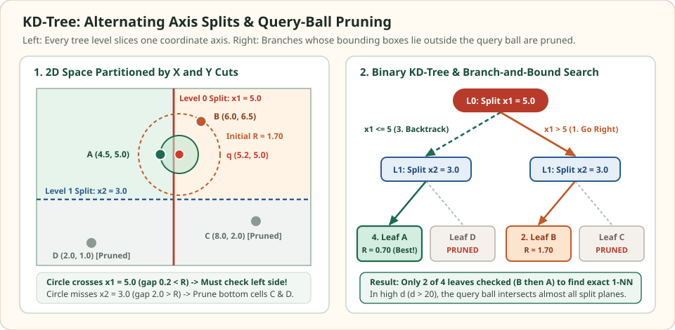

KD-trees: split coordinate axes and prune with query balls
Bentley's $k$-dimensional tree (KD-tree) is the foundational spatial index for vector search. Each internal node picks one coordinate axis $j\in\{1,\dots,d\}$ and a threshold $\tau$, partitioning its bounding box with the axis-aligned hyperplane $x_j = \tau$. Because testing which side of $x_j = \tau$ a query falls on requires only a single scalar comparison ($q_j \le \tau$), descending from the root to a leaf costs $O(\log_2 N)$ scalar comparisons—with zero vector dot products along the way.
Tracing how a KD-tree decides whether to cross a split boundary reveals both why it is exact and fast in low dimensions ($d \le 15$) and why high-dimensional RAG embeddings ($d=768$) force it to become an approximate, budget-capped search.
Trace when the query ball crosses or prunes a split plane
Four points · two axis splits · two pruned leaves
The root splits vertically at $x_1 = 5.0$, and both children split horizontally at $x_2 = 3.0$. Query $q=(5.2, 5.0)$ sits just to the right of $x_1 = 5.0$, so it visits $B=(6.0, 6.5)$ first ($R^2 = 2.89$). Its query ball crosses $x_1 = 5.0$ to uncover the true nearest neighbor $A=(4.5, 5.0)$ ($R^2 = 0.49$), while never reaching $x_2 = 3.0$—pruning both $C$ and $D$ uninspected.


Fixed query q = (5.2, 5.0). Only A and B are scored; C and D are eliminated by their split plane.
| ID and coordinates | KD-tree cell | Split plane tested | Plane margin (q_j - tau)^2 | Exact squared L2 to q | Evaluated? |
|---|---|---|---|---|---|
| B = (6.0, 6.5) | x1 > 5, x2 > 3 | Initial leaf | 0.00 | 2.89 | Yes (1st) |
| C = (8.0, 2.0) | x1 > 5, x2 ≤ 3 | x2 = 3.0 | (5.0 - 3.0)^2 = 4.00 > 2.89 | 16.84 | No (pruned) |
| A = (4.5, 5.0) | x1 ≤ 5, x2 > 3 | x1 = 5.0 | (5.2 - 5.0)^2 = 0.04 ≤ 2.89 | 0.49 | Yes (2nd) |
| D = (2.0, 1.0) | x1 ≤ 5, x2 ≤ 3 | x2 = 3.0 | (5.0 - 3.0)^2 = 4.00 > 0.49 | 26.24 | No (pruned) |
Scroll horizontally to compare the columns. Keyboard: focus the table, then use the left and right arrow keys.
Write the exact coordinate-hyperplane pruning condition
Suppose the search has already discovered a candidate at squared Euclidean distance $R^2 = \min_{w\in W}\lVert q - w\rVert_2^2$. At an internal node that splits coordinate $j$ at threshold $\tau$, any vector $x$ inside the opposite half-space satisfies $|q_j - x_j| \ge |q_j - \tau|$. Because squared L2 is a sum of nonnegative coordinate squares:
Therefore, the entire opposite subtree cannot contain any point closer than the current best whenever:
Notice the computational efficiency of this test: deciding whether to prune an entire subtree requires computing only a single scalar difference $(q_j - \tau)^2$, not a $d$-dimensional inner product.
Why single-coordinate margins vanish as dimension d grows
Look closely at the inequality $(q_j - \tau)^2 > R^2$. The left-hand side measures displacement along one coordinate axis $j$, whereas the right-hand side $R^2 = \sum_{i=1}^d (q_i - x_{*,i})^2$ sums squared displacements across all $d$ coordinates.
When embeddings have roughly balanced per-coordinate variance $\sigma^2$, the expected single-coordinate margin is $\mathbb{E}[(q_j - \tau)^2] = O(\sigma^2)$, while the distance to the nearest neighbor scales as $R^2 = \Theta(d\sigma^2)$:
In $d=768$ dimensions, $(q_j - \tau)^2 \le R^2$ holds for almost every internal node near the query. Exact branch-and-bound pruning collapses into a near-exhaustive scan. To use KD-trees as an ANN method in high dimensions, libraries such as FLANN build a forest of randomized KD-trees (splitting randomly among the top 5 highest-variance coordinates) and cap the total number of leaf visits with a shared priority queue.
| Operating mode | Stopping condition | Behavior in high d |
|---|---|---|
| Greedy root-to-leaf (1 leaf) | Stop immediately after scoring the initial leaf | $O(\log N)$ time, but misses neighbors across nearby split planes |
| Exact branch-and-bound | Explore every sibling with $(q_j - \tau)^2 \le R^2$ | 100% recall, but visits almost all leaves when $d \gg 20$ |
| Randomized KD-forest (FLANN) | Pop smallest $(q_j - \tau)^2$ across $T$ trees up to $L_{\max}$ leaves | Bounded latency; recall trades smoothly against $L_{\max}$ |
Verify exact KD-tree pruning and leaf visit counts in Python
import numpy as np
q = np.array([5.2, 5.0])
points = {
"A": np.array([4.5, 5.0]),
"B": np.array([6.0, 6.5]),
"C": np.array([8.0, 2.0]),
"D": np.array([2.0, 1.0]),
}
def sq_l2(u, v):
diff = u - v
return float(np.dot(diff, diff))
# KD-tree representation: internal nodes have (axis, tau, left, right); leaves have point ID
kd_tree = {
"axis": 0, "tau": 5.0,
"left": {"axis": 1, "tau": 3.0, "left": {"leaf": "D"}, "right": {"leaf": "A"}},
"right": {"axis": 1, "tau": 3.0, "left": {"leaf": "C"}, "right": {"leaf": "B"}},
}
def search_kdtree(node, query, state):
if "leaf" in node:
pid = node["leaf"]
d2 = round(sq_l2(query, points[pid]), 4)
state["visited"].append(pid)
if d2 < state["best_d2"]:
state["best_d2"] = d2
state["best_id"] = pid
return
axis, tau = node["axis"], node["tau"]
near = node["left"] if query[axis] <= tau else node["right"]
far = node["right"] if query[axis] <= tau else node["left"]
search_kdtree(near, query, state)
plane_d2 = round(float((query[axis] - tau) ** 2), 4)
if plane_d2 <= state["best_d2"]:
search_kdtree(far, query, state)
else:
state["pruned_planes"].append((axis, tau, plane_d2))
state = {"best_d2": float("inf"), "best_id": None, "visited": [], "pruned_planes": []}
search_kdtree(kd_tree, q, state)
assert state["best_id"] == "A" and state["best_d2"] == 0.49
assert state["visited"] == ["B", "A"]
assert len(state["pruned_planes"]) == 2
print("Visited leaves:", state["visited"], "Best:", (state["best_id"], state["best_d2"]))
print("Pruned planes (axis, tau, margin^2):", state["pruned_planes"])Check the operating assumptions
Why choose the coordinate with maximum variance for a KD-tree split instead of cycling 1, 2, ..., d?
Splitting a coordinate with near-zero spread places the threshold tau close to every point's coordinate value, making (q_j - tau)^2 tiny and impossible to prune. Splitting wide-variance coordinates maximizes the expected plane margin.
Does rotating dense embeddings with PCA help a KD-tree?
Yes. Aligning the top tree levels with the top principal components concentrates variance into the first few split axes, increasing (q_j - tau)^2 at the upper levels of the tree.
Can the hyperplane test (q_j - tau)^2 > R^2 be used unchanged for raw inner product?
No. The pruning bound relies on the coordinate decomposition of squared Euclidean distance and nonnegativity of each coordinate term. Unit-normalized cosine rankings can be converted to squared L2 via 2 - 2 cos(q, x), whereas unnormalized inner products require metric-specific bounds or Ball/cone trees.
Sources
- Bentley: Multidimensional Binary Search Trees Used for Associative Searching, Communications of the ACM 1975.
- Friedman, Bentley, and Finkel: An Algorithm for Finding Best Matches in Logarithmic Expected Time, ACM TOMS 1977.
- Silpa-Anan and Hartley: Optimised KD-trees for Fast Image Descriptor Matching, CVPR 2008 (randomized KD-tree forests).